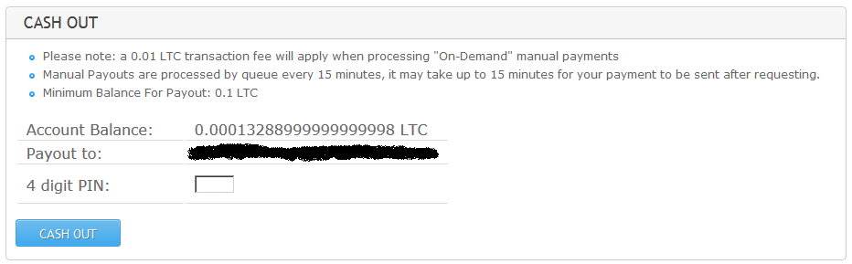

Эта часть не такая веселая, как две предыдущие.
Как делать прием или передачу лайткоинов в условиях их отсутсвия?
Да никак.
Мы выяснили, что получить даже один лайткоин на мощном четырехядерном CPU можно будет в лучшем случае через 3 года. Но мы учтем, что лайткоин делится на дробные единицы, как и сатоши у биткоинов.
Ранее был произведен следующий расчет. Порог вывода с пула - 0,1 LTC. CPU-майнер добывает 0,14 LTC в год. Поэтому получить в свое распоряжение лайткоины можно будет в лучшем случае через ~8 месяцев непрерывного майнинга.
На пуле в разделе "My Account" - "Account Detail" за неполные сутки работы майнера отображается следующий баланс счета:

Значение баланса обновляется каждые 15 минут.
Сейчас мне нужно решить, хочу ли я заморачиваться с покупкой LTC, или отложить этот вопрос до момента вывода с пула. А чтобы решить, мне нужно изучить законодательство на конец 2015 года и понять пути обмена LTC на другие виды электронных фиатных фантиков. Возможно, что к тому моменту, когда я пойму, как законопослушно работать с LTC, уже и подоспеет выдача на пуле.
На этом я пока заканчиваю цикл статей по криптовалюте лайткоин, и вернусь к нему после получения LTC на собственный лайткоин-кошелек.